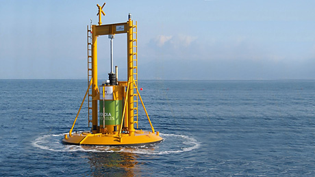

Quick Links
More Ocean Information
How it is produced
An oscillating water column is partially lowered into water. It is open below the surface line with a hollow upper part filled with air. The water level within the water column increases and decreases with waves coming in resulting in compression and decompression of air. Wells-turbines are ideal for the purpose of converting this into energy, because the turbines rotate the same way independent of the direction of the airflow. A generator converts this mechanical energy into useful electricity.
-
The point absorber consists of a series of long unit, floating on the surface of the water following the movements of the wave. It is this movement that is harnessed and converted to electricity in the point absorber.A Scottish company, Pelamis Wave Power (previously known as Ocean Power Delivery), has installed a successful 2.5 MW wave farm Aguçadoura of the coast of Portugal. This wave power plant was opened in September 2008. Below is a picture of one of the Pelamis Wave Energy Converters that is the foundation of Aguçadoura, maybe the most promising device to harness wave energy so far.

-
The buoyancy unit is floating on the waves or below the water surface, fixed to the bottom, following the vertical movements of the waves up and down. These waves drive a pump that generates electricity. The power generation of a typical ocean wave energy unit is about 1 MW, but we expect this output to get better along with the wave energy technology. After several years with low activity around marine energy technologies, the need for renewable energy has pushed the interest for these technologies forward..

Applications
Point Absorber
A point absorber is a floating structure with components that move relative to each other due to wave action (e.g., a floating buoy inside a fixed cylinder). Point absorbers often look like floating oceanographic buoys. They utilize the rise and fall of the wave height at a single point for energy conversion. The relative up and down bobbing motion caused by passing waves is used to drive electromechanical or hydraulic energy converters to generate power..
Overtopping Devices
Overtopping devices have reservoirs that are filled by incoming waves, causing a slight buildup of water pressure like a dam. The water is then released, and gravity causes it to flow back into the ocean. The energy of the falling water is used to turn hydro turbines to generate power. Specially built floating platforms can also create electricity by funneling waves through internal turbines and then back into the sea.
Advantages
-
Oceans are vast source energy.
As oceans are available in vast number so huge almont of energy can be genrated from them that too in almost all part of world.
-
Variety of Ways To Harness Ocean Energy.
One of its benefit is that there are a variety of ways to gather it. Current gathering methods range from installed power plant with hydro turbines to seafaring vessels equiped with massive structures that are laid into the sea to gather the wave energy..
-
Ocean Energy is enviorment friendly
Using the non-renewalble resources effect the stability of nature also effects the pollution content where as genrating energy from oceans prevents both of these.
-
Ocean Energy is easily predictable.
Using the non-renewalble resources effect the stability of nature also effects the pollution content where as genrating energy from oceans prevents both of these..
-
Ocean Energy doesnt cause any damage to land.
Unlike fossil fuels which cause massive damage to land as they can leave large holes while extracting energy from them , wave power does not cause any damage to earth. It is safe, clean and one of the preferred method to extract energy from ocean.
Disadvantages
-
Effect on marine Ecosystem
it still creates hazards for some of the creatures near it. Large machines have to be put near and in the water to gather energy from the waves. These machines disturb the seafloor, change the habitat of near-shore creatures (like crabs and starfish) and create noise that disturbs the sea life around them. There is also a danger of toxic chemicals that are used on wave energy platforms spilling and polluting the water near them..
-
Visual pollution
Wave energy generators may be unpleasant for some who live close to coastal regions. They look like large machines working in the middle of the ocean and destroy the beauty of the ocean. They also generate noise pollution but the noise is often covered by the noise of waves which is much more than that of wave generators..
-
Expensive
Ocean energy costs alot as huge machinary has to be placed in the middel of huge water bodie, also it has to be used right away as its quite expensive to store this energy. .
-
Weak Performance in Rough Weather
The performance of wave power drops significantly during rough weather. For proper functioning of the equiptment a stable weather is needed. They must withstand rough weather..